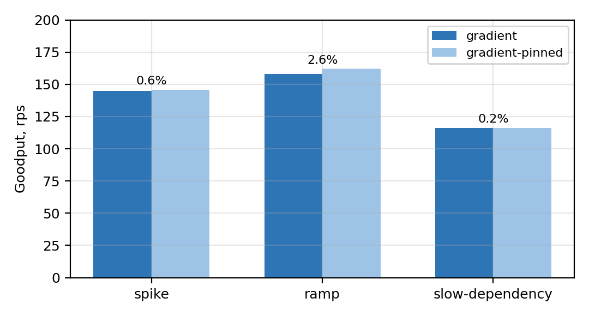
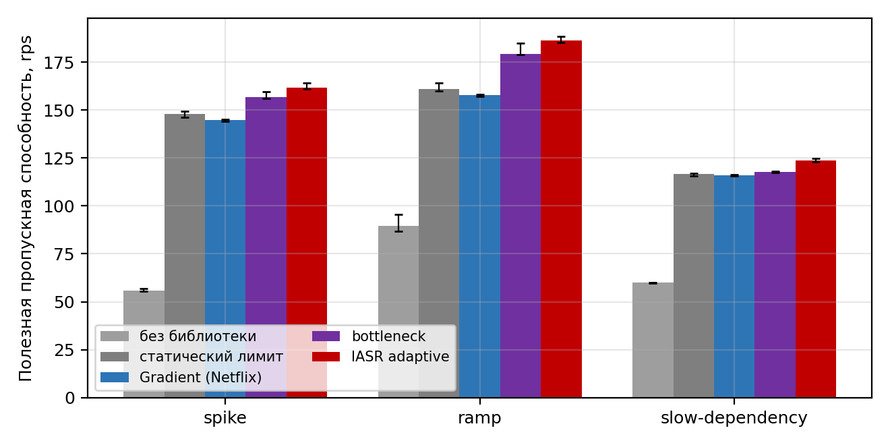
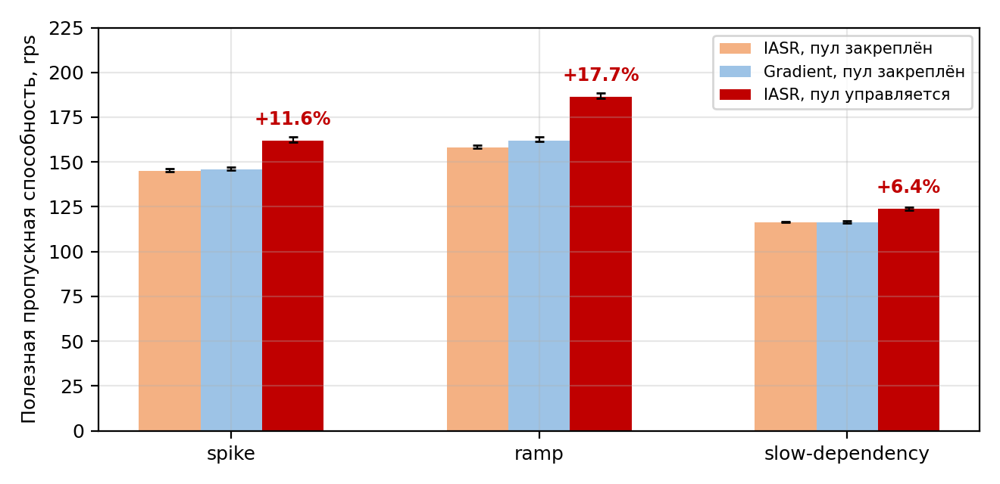
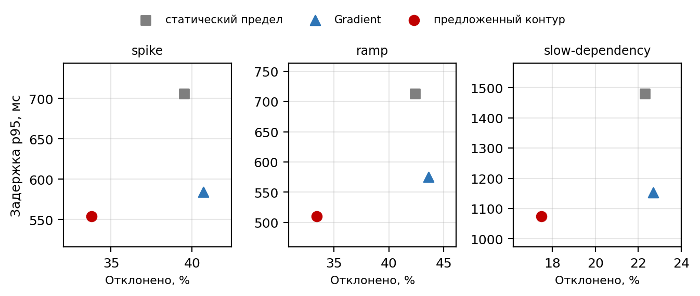
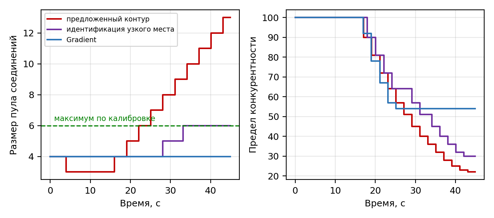

УДК 004.415.2
КООРДИНИРОВАННАЯ АДАПТАЦИЯ МЯГКИХ РЕСУРСОВ СЕРВЕРНОГО ПРИЛОЖЕНИЯ: ЭКСПЕРИМЕНТАЛЬНАЯ ОЦЕНКА ОТНОСИТЕЛЬНО ОДНОРЕСУРСНЫХ РЕГУЛЯТОРОВ
А.Н. Бобков, О.В. Сизова
Бобков Артем Николаевич,
Сизова Ольга Владимировна (ORCID: 0000-0002-1443-3566)
Ивановский государственный химико-технологический университет,
г. Иваново, Россия. 153000, Ивановская область, г. Иваново, пр. Шереметевский, 7.
E-mail: trapp.umin@gmail.com, siz-olga@yandex.ru
Параметры конфигурации серверного приложения, определяющие степень его внутреннего параллелизма, — предел одновременно обслуживаемых запросов, размеры пулов соединений и потоков, глубины очередей — принято задавать статически, хотя они допускают изменение во время работы, а их оптимальные значения зависят от нагрузки и от состояния внешних зависимостей. Такие параметры называют мягкими ресурсами. Существующие промышленные решения адаптируют один мягкий ресурс — уровень конкурентности, — тогда как ресурсы связаны: ограничение, снятое с одного из них, переносится на другой. В статье исследуется согласованная адаптация нескольких связанных мягких ресурсов единым контуром управления с обратной связью. Разработан контур, объединяющий предел конкурентности и размер пула соединений через общий слой ограничений и единый интерфейс подключения правил. Экспериментальная проверка выполнена на нагрузочном стенде с реальной СУБД PostgreSQL, ёмкость которой предварительно откалибрована: максимум пропускной способности достигается при числе одновременных обращений, равном числу выделенных ядер. Выполнено 196 запусков в четырёх сценариях нагрузки с чередованием повторов между режимами; доверительные интервалы получены бутстрэпом медианы. В разделяющем эксперименте управление вторым ресурсом запрещалось при неизменных прочих условиях. При одном управляемом ресурсе предложенные правила статистически неотличимы от алгоритма Gradient, а разрешение управлять пулом соединений увеличивает полезную пропускную способность на 6,4–17,7 % при одновременном сокращении задержки и доли отклонённых запросов. Контроллер с явной идентификацией узкого места выводит пул к калиброванному максимуму или вплотную к нему, однако позже независимых правил и уступает им 3,2–4,8 % пропускной способности. Порог различимости стенда определён встроенным отрицательным контролем и составляет около 3 %.
Ключевые слова: мягкие ресурсы, адаптивное управление, обратная связь, конкурентность, пул соединений, пропускная способность, задержка, SLO, управление перегрузкой, экспериментальная оценка.
COORDINATED ADAPTATION OF SOFT RESOURCES OF A SERVER APPLICATION: AN EXPERIMENTAL EVALUATION AGAINST SINGLE-RESOURCE CONTROLLERS
A.N. Bobkov, O.V. Sizova
Bobkov Artem Nikolaevich,
Sizova Olga Vladimirovna (ORCID: 0000-0002-1443-3566)
Ivanovo State University of Chemistry and Technology,
Ivanovo, Russia. 153000, Ivanovo region, Ivanovo, Sheremetevsky ave., 7.
E-mail: trapp.umin@gmail.com, siz-olga@yandex.ru
Configuration parameters of a server application that determine its degree of internal parallelism — the limit on concurrently served requests, connection and thread pool sizes, queue depths — are usually set statically, although they can be changed at run time and their optimal values depend on the load and on the state of external dependencies. Such parameters are called soft resources. Existing industrial solutions adapt a single soft resource, the concurrency level, whereas the resources are coupled: a constraint lifted from one of them is transferred to another. This paper studies the coordinated adaptation of several coupled soft resources by a single feedback control loop. A loop has been developed that combines the concurrency limit and the connection pool size through a shared constraint layer and a single interface for plugging in decision rules. Experimental validation was performed on a load test bench with a real PostgreSQL database whose capacity had been calibrated in advance: peak throughput is reached when the number of concurrent queries equals the number of allocated cores. In total, 196 runs were performed in four load scenarios with repetitions interleaved across modes; confidence intervals were obtained by bootstrapping the median. In a separating experiment, control of the second resource was disabled while all other conditions remained unchanged. With a single controlled resource the proposed rules are statistically indistinguishable from the Gradient algorithm, whereas permitting control of the connection pool increases goodput by 6.4–17.7 % while simultaneously reducing latency and the share of rejected requests. The controller with explicit bottleneck identification drives the pool to or next to the calibrated maximum, but later than the independent rules, and loses 3.2–4.8 % of throughput to them. The resolution threshold of the bench was determined by a built-in negative control and is about 3 %.
Keywords: soft resources, adaptive control, feedback, concurrency, connection pool, throughput, latency, SLO, congestion control, experimental evaluation.
ВВЕДЕНИЕ
Производительность серверного приложения определяется не только объёмом выделенных ему аппаратных ресурсов. Существенную роль играют параметры конфигурации, задающие распределение работы внутри процесса: предел числа одновременно обслуживаемых запросов, размеры пулов соединений и потоков, глубины очередей, параметры пакетной обработки. Эти параметры не увеличивают вычислительную мощность системы, но определяют, как она будет использована, и в литературе их принято называть мягкими ресурсами [1, 2]. Систематические исследования показали, что производительность снижается как при недостаточном, так и при избыточном выделении мягких ресурсов [1].
Мягкие ресурсы технически допускают изменение во время работы процесса, однако на практике задаются при запуске и далее не меняются. Значения выбираются по результатам нагрузочного тестирования или по опыту и фиксируются в конфигурации. Такой подход прост и предсказуем, но предполагает, что существует одно значение параметра, верное для всего времени эксплуатации.
Это предположение не выполняется. Оптимальные значения мягких ресурсов зависят от профиля входного потока, характера запросов и состояния внешних зависимостей, и все три величины меняются во времени. Деградация базы данных, изменение соотношения тяжёлых и лёгких запросов, кратковременный всплеск интенсивности смещают оптимум, и заранее подобранная конфигурация перестаёт ему соответствовать именно тогда, когда цена ошибки наиболее высока. Удешевление самих механизмов параллелизма этой проблемы не снимает: виртуальные потоки платформы Java делают сами потоки практически бесплатными [3], однако ограниченной остаётся ёмкость внешних зависимостей, и степень параллелизма по-прежнему приходится ограничивать. Горизонтальное масштабирование в оркестраторах контейнеров [4] изменяет число экземпляров сервиса, но не внутрисервисные параметры, так что каждый экземпляр может сохранять неоптимальную конфигурацию.
Задача автоматической настройки уровня конкурентности имеет промышленные решения. Библиотека Netflix concurrency-limits [5] содержит семейство алгоритмов, из которых наиболее известны Vegas и Gradient, восходящие к механизмам управления перегрузкой в протоколе TCP [6]. Фильтр адаптивной конкурентности прокси-сервера Envoy [7] реализует ту же идею на уровне сервисной сетки. Распространённые библиотеки изоляции, например Resilience4j [8], ограничивают конкурентность статическим семафором. Все перечисленные решения управляют ровно одним ресурсом — числом одновременно обрабатываемых запросов.
Адаптация сложных систем как самостоятельный предмет исследования разработана в отечественной литературе [9]. Программные системы с обратной связью рассматриваются в рамках автономных вычислений [10] и теории управления вычислительными системами [11]. Разрабатываются методы синтеза регуляторов программных систем с формальными гарантиями [12]. Наиболее близки к настоящей работе ConScale [13] и Sora [2]: они настраивают мягкие ресурсы критических микросервисов — число потоков и соединений — согласованно с горизонтальным масштабированием, опираясь на модели зависимости пропускной способности от конкурентности, а их эффективность оценивается в сравнении с системами масштабирования. Сопоставления внутрипроцессного управления несколькими мягкими ресурсами с промышленными ограничителями конкурентности при прочих равных условиях в перечисленных работах не проводится.
Между тем мягкие ресурсы связаны между собой. Запрос, допущенный к обработке, занимает соединение с базой данных на время обращения к ней, поэтому предел конкурентности и размер пула соединений ограничивают одну и ту же величину — число запросов в системе. Ограничение, снятое с одного ресурса, переносится на другой: регулятор, повышающий допуск при недостаточном пуле, лишь перемещает очередь из одной точки системы в другую. Однорессурсный регулятор такого переноса не наблюдает и по построению не может его устранить. На практике именно СУБД и соединения с ней нередко оказываются узким местом, препятствующим линейному масштабированию распределённых систем [14].
Цель работы — установить, окупается ли согласованное управление несколькими связанными мягкими ресурсами по сравнению с адаптацией одного ресурса, и если окупается, то количественно определить величину выигрыша и условия его возникновения.
Научная новизна работы состоит в том, что вклад координации нескольких ресурсов выделен экспериментально в чистом виде. Для этого применён разделяющий эксперимент: один и тот же регулятор измеряется при разрешённом и при запрещённом управлении вторым ресурсом, все прочие условия остаются неизменными. Такая постановка относит разницу именно к координации, а не к особенностям набора правил, и этим отличается от прямого сравнения различных библиотек.
Практическая значимость состоит в том, что результаты получены на реальной системе управления базами данных, ёмкость которой предварительно измерена, а не задана модельными допущениями, и сопровождаются оценкой достоверности, позволяющей отделить воспроизводимый эффект от разброса измерений.
МАТЕРИАЛЫ И МЕТОДЫ
Объектом управления выступает серверное приложение на платформе JVM, обслуживающее поток запросов и обращающееся к внешней базе данных. Вектор управления объединяет два мягких ресурса: предел конкурентности L и максимальный размер пула соединений P. Управление дискретно; шаг равен одному окну наблюдения, в эксперименте — 1 с.
Наблюдаемыми величинами служат квантили задержки за окно, полезная пропускная способность (goodput — число успешно обслуженных запросов в секунду), доли ошибок и клиентских тайм-аутов, число запросов в обработке, длина очереди за разрешением на обслуживание, а также число потоков, ожидающих соединения, время его получения и число простаивающих соединений.
Критерий оптимизации — максимум полезной пропускной способности при ограничении на 95-й процентиль задержки, задаваемом целевым уровнем обслуживания (SLO), и при допустимых границах изменения каждого ресурса. При перегрузке ограничение по задержке невыполнимо в принципе: при приближении загрузки к единице время ожидания в очереди растёт нелинейно [15], что подтверждается и исследованиями времени отклика облачных систем [16]. Поэтому фактически решается смягчённая задача, в которой минимизируются доля нарушений SLO и доля отклонённых запросов. Три критерия конфликтуют и далее приводятся совместно, а не сворачиваются в один показатель: режим с агрессивным отбрасыванием запросов улучшает квантили задержки просто потому, что удаляет медленные запросы из выборки.
Связь наблюдаемых величин задаётся законом Литтла [17]: в стационарном режиме число запросов в системе равно произведению интенсивности их поступления на время пребывания. Подстановка целевого значения задержки даёт оценку конкурентности, допускаемой SLO. Оценка используется как ориентир и потолок роста, а не как уставка, поскольку закон справедлив в стационаре, а контур работает преимущественно на переходных режимах.
Контур управления выполняет на каждом шаге последовательность «сбор метрик — принятие решения — проверка ограничений — применение — протоколирование», что соответствует схеме MAPE-K автономных вычислений [10]. Правила принятия решений вынесены за программный интерфейс, что позволяет подключать альтернативные алгоритмы без изменения остальной части контура; именно так в эксперимент включён алгоритм Gradient.
Закон управления конкурентностью асимметричен: рост аддитивный, снижение мультипликативное и пропорциональное величине нарушения. Асимметрия наследуется от алгоритмов управления перегрузкой в сетях, для которых показано, что сочетание аддитивного роста с мультипликативным снижением обеспечивает сходимость к эффективному и справедливому распределению канала между потоками, тогда как схемы с аддитивным снижением или мультипликативным ростом к справедливому распределению не сходятся [18]; для одиночного контура этот результат служит эвристическим обоснованием формы закона, а не доказательством его сходимости. Множитель снижения ограничен снизу, поэтому одно неблагоприятное измерение не может обрушить предел. Рост дополнительно обусловлен признаком востребованности: предел повышается лишь тогда, когда он действительно ограничивает обработку. Без этого условия аддитивный рост доводит предел до максимума в спокойные периоды, и система встречает возмущение без запаса управления.
Размер пула увеличивается при одновременном наличии ожидающих потоков и повышенного времени получения соединения и сокращается при устойчивом наличии простаивающих соединений. Признаком избыточности выбраны простаивающие соединения, а не отсутствие очереди: пул правильного размера очереди также не имеет, и сокращение по этому признаку отбирало бы запас в спокойные периоды.
Решения регулятора не применяются напрямую. Слой ограничений последовательно выполняет выдержку между изменениями, блокировку роста ресурса при нарушении SLO, ограничение шага и приведение к допустимым границам. Поэтому ограниченность управляющих величин и скорости их изменения выполняется при любом поведении регулятора, включая неверно настроенный.
Контуры разнесены по масштабам времени: предел конкурентности может меняться каждый шаг, размер пула — не чаще одного раза в два шага, а в контроллере с идентификацией узкого места пул пересматривается раз в пять шагов. Основание для этого физическое. Изменение допуска обратимо в пределах шага и действует немедленно, тогда как изменение пула требует установления соединений, и его влияние на задержку проявляется на протяжении нескольких окон. Пересмотр пула чаще, чем наблюдается его собственный эффект, означал бы реакцию на переходный процесс предыдущего изменения, а не на его результат.
Нагрузочный стенд построен вокруг приложения с единственной операцией: запрос получает соединение из пула, выполняет вычислительно нагруженный запрос к базе данных, возвращает соединение и выполняет короткую работу в самом приложении. Нагрузка подаётся по открытому циклу — с заданной интенсивностью независимо от того, справляется ли сервер. Замкнутый цикл, в котором очередной запрос отправляется после ответа на предыдущий, сам ограничивает себя при замедлении сервера, и перегрузка при таком измерении не наступает. Задержка отсчитывается от момента, когда запрос должен был быть отправлен, что исключает маскировку отставания клиента под улучшение квантилей.
Ключевым элементом методики является отказ от модельной зависимости в пользу реальной. Имитационное моделирование широко применяется для исследования сложных систем [19] и даёт точно известные параметры, однако допущения модели переносятся на все выводы, сделанные с её помощью. Поэтому в качестве зависимости использована СУБД PostgreSQL 16, размещённая в контейнере с шестью выделенными ядрами, и предварительно измерена зависимость её пропускной способности от числа одновременных обращений (рис. 1).
Измеренная кривая унимодальна: пропускная способность растёт, достигает максимума 293 запроса в секунду при шести одновременных обращениях и далее снижается до 75–81 % пика. Положение максимума совпало с числом выделенных ядер — величиной, не задававшейся ни одним параметром стенда, — что согласуется с моделью сервера баз данных как многоканальной системы массового обслуживания, число каналов которой определяется числом процессоров [20]. Практическая рекомендация для пулов соединений также связывает их размер с числом ядер сервера баз данных, предлагая оценку «удвоенное число ядер плюс число дисков», рассчитанную на запросы с ожиданием ввода-вывода [21]; для вычислительно нагруженного запроса без ввода-вывода максимум пришёлся ровно на число ядер. Для постановки задачи важно, что целевая функция не монотонна: стратегия «выставить максимальное значение» не оптимальна, и выбор размера пула является задачей оптимизации, а не максимизации.
Калибровка показала также, что использовавшаяся ранее аналитическая модель зависимости существенно завышала потери от превышения оптимума: при десятикратном превышении она предсказывала 32 % пиковой пропускной способности, тогда как измерено 81 %. Это подтверждает необходимость измерения: ошибка модели не видна изнутри, и все выводы о выборе размера пула её наследуют.
Исследованы четыре сценария нагрузки, каждый из которых отражает определённый способ, которым фиксированная настройка оказывается неверной. Сценарий steady задаёт постоянную интенсивность 120 запросов в секунду, заведомо меньшую ёмкости, и проверяет, что контур не вредит в нормальном режиме. Сценарий spike содержит внезапный всплеск до 400 запросов в секунду длительностью 20 с с последующим возвратом. Сценарий ramp задаёт плавный рост интенсивности от 60 до 500 запросов в секунду. Сценарий slow-dependency сохраняет постоянную интенсивность 150 запросов в секунду, но на 20 с увеличивает стоимость запроса к базе данных в 2,4 раза, так что ёмкость зависимости падает более чем вдвое; правильные значения параметров до и во время деградации различаются кратно, и никакая фиксированная настройка не может быть верной одновременно.
Сопоставлялись семь режимов. Режим off отключает управление полностью. Режим fixed включает ограничитель, удерживающий стартовое значение, и отделяет ценность ограничения допуска как такового от ценности его адаптации. Режим adaptive соответствует предложенному контуру. Режим gradient реализует алгоритм Gradient, подключённый через тот же интерфейс, и служит базой сравнения с промышленным уровнем. Режим bottleneck использует контроллер с явной идентификацией узкого места. Режимы adaptive-pinned и gradient-pinned повторяют режимы adaptive и gradient при запрещённом изменении пула. Стартовый размер пула составлял четыре соединения, предел конкурентности — сто запросов, SLO — 150 мс по 95-му процентилю задержки.
Порядок измерений потребовал отдельного внимания. Первоначально стенд выполнял все повторы одного режима подряд. При такой организации каждый режим занимает собственный отрезок календарного времени, и дрейф внешних условий относится к одному режиму и не относится к остальным. Контрольная проверка показала, что одна и та же конфигурация измерялась при этом как 70,9 и как 114,7 запроса в секунду в двух сериях, то есть с расхождением 62 % при неизменных настройках, что превышает любой эффект, который стенд предназначен различать. Поэтому повторы были перестроены с чередованием между режимами: дрейф в этом случае действует на все режимы одинаково и сокращается при сравнении.
Достоверность оценивалась бутстрэпом [22]: для каждой метрики строился перцентильный 95 % доверительный интервал медианы по семи повторам. Интервал предпочтён размаху, поскольку размах расширяется с каждым дополнительным повтором и тем самым поощряет их меньшее число; бутстрэп предпочтён интервалу Стьюдента, поскольку семи повторов недостаточно для предположения о нормальности; медиана предпочтена среднему, чтобы один неудачный запуск не смещал сводку. Различие между режимами признаётся только при непересекающихся интервалах. Всего выполнено 196 запусков: четыре сценария, семь режимов, семь повторов.
РЕЗУЛЬТАТЫ
Прежде чем обсуждать различия между режимами, следует установить, какие различия стенд способен разрешить. Алгоритм Gradient не управляет пулом соединений, поэтому режимы gradient и gradient-pinned представляют собой одну и ту же конфигурацию, измеренную дважды, и расхождение между ними является чистой ошибкой измерения (рис. 2).

Расхождение составило 0,6 %, 2,6 % и 0,2 % по сценариям. Следовательно, порог различимости стенда составляет около 3 %, и меньшие различия не подлежат интерпретации, даже когда доверительные интервалы формально расходятся. Этот порог используется далее при обсуждении всех результатов.
Наибольший по величине эффект связан не с адаптацией, а с наличием ограничения допуска как такового (табл. 1).
Таблица 1. Влияние ограничения допуска на поведение системы при перегрузке
| Сценарий | off, rps | off, отказы | fixed, rps | Прирост |
|---|---|---|---|---|
| spike | 55,7 | 77,2 % | 148,0 | +166 % |
| ramp | 89,5 | 68,0 % | 161,2 | +80 % |
| slow-dependency | 59,9 | 60,1 % | 116,6 | +95 % |
Примечание. «Отказы» — доля запросов, не получивших ответа до истечения клиентского тайм-аута; в режиме fixed таких запросов нет ни в одном сценарии.
Без ограничения допуска перегрузка не распределяется по очереди, а приводит к отказу в обслуживании: запросы накапливаются на пуле соединений, исчерпывают время ожидания и завершаются ошибкой. Полезная пропускная способность при этом ниже, чем при статическом ограничении, поскольку ёмкость расходуется на запросы, которые не доживут до ответа. Этот выигрыш обеспечивается обычным семафором и не может быть отнесён на счёт управляющего контура; для его выделения в методику и введён режим fixed.
Сводные результаты по всем режимам представлены на рис. 3.

Центральный результат получен в разделяющем эксперименте. Сначала сопоставляются режимы с запрещённым управлением пулом: оба регулятора решают в них одну и ту же однорессурсную задачу. Затем тому же регулятору разрешается управлять пулом при неизменных прочих условиях (табл. 2, рис. 4).
Таблица 2. Разделяющий эксперимент: вклад координации второго ресурса
| Сценарий | adaptive-pinned | gradient-pinned | adaptive | Разница А | Разница Б |
|---|---|---|---|---|---|
| spike | 145,1 | 145,8 | 161,9 | −0,5 % | +11,6 % |
| ramp | 158,3 | 162,0 | 186,3 | −2,3 % | +17,7 % |
| slow-dependency | 116,4 | 116,2 | 123,8 | +0,2 % | +6,4 % |
Примечание. Приведены медианы полезной пропускной способности, запросов в секунду. Разница А — предложенные правила относительно алгоритма Gradient при запрещённом управлении пулом; разница Б — тот же регулятор при разрешённом управлении пулом относительно запрещённого.

Первый вывод носит ограничительный характер и должен быть сформулирован прежде положительного. При одном управляемом ресурсе предложенные правила и алгоритм Gradient статистически неразличимы: все три значения разницы А лежат в пределах порога различимости. Утверждать превосходство разработанных правил управления конкурентностью над промышленным уровнем неправомерно.
Второй вывод составляет основной результат работы. Разрешение тому же регулятору управлять размером пула соединений увеличивает полезную пропускную способность на 6,4–17,7 %. Улучшение происходит одновременно по всем трём критериям: 95-й процентиль задержки сокращается с 577 до 554 мс, с 573 до 510 мс и с 1158 до 1074 мс, а доля отклонённых запросов снижается с 40,6 до 33,8 %, с 43,5 до 33,4 % и с 22,4 до 17,5 % соответственно. Характерного для регуляторов допуска размена между задержкой и отбрасыванием запросов здесь нет (рис. 5).

Относительно алгоритма Gradient в том виде, в каком он применялся бы на практике, предложенный контур даёт прирост полезной пропускной способности 11,7 %, 18,0 % и 6,7 % при сокращении 95-го процентиля задержки на 5–11 % и снижении доли отклонённых запросов на 5–10 процентных пунктов.
Механизм выигрыша раскрывают траектории управляющих величин (рис. 6).

Стартовый размер пула составляет четыре соединения при калиброванном максимуме, равном шести, так что пул изначально ограничивает систему. Однорессурсный регулятор этого не наблюдает: он удерживает пул на стартовом значении и компенсирует нехватку единственным доступным ему средством — снижает допуск и отбрасывает запросы. Предложенный контур увеличивает пул и тем самым устраняет ограничение вместо того, чтобы под него подстраиваться; предел конкурентности он при этом опускает ниже, чем Gradient, но пропускает через систему больше запросов.
Траектории выявляют и слабость предложенных правил. В начале сценария ramp, пока нагрузка мала, контур сокращает пул с четырёх до трёх соединений: правило сокращения по простаивающим соединениям срабатывает в спокойный период и снимает запас перед ростом нагрузки.
Отдельного обсуждения заслуживает контроллер с явной идентификацией узкого места. Он раскладывает время обслуживания запроса на наблюдаемые слагаемые и направляет воздействие в тот ресурс, чей вклад в задержку сверх неустранимой стоимости больше. Этот контроллер выводит пул к пяти-шести соединениям, то есть к калиброванному максимуму или вплотную к нему, тогда как независимые правила продолжают рост до десяти-тринадцати. Тем не менее по полезной пропускной способности он уступает независимым правилам на 3,2 %, 3,8 % и 4,8 %: знак разницы одинаков во всех трёх сценариях и интервалы не пересекаются, хотя в сценарии spike величина близка к порогу различимости.
Траектории указывают на вероятную причину. Контроллер с идентификацией узкого места наращивает пул осторожнее и достигает шести соединений на 28-й секунде в сценарии spike и на 33-й — в сценарии ramp, тогда как независимые правила — на 20-й и 22-й; в сценарии slow-dependency он не выходит за пять соединений. Независимые правила проходят максимум раньше и продолжают рост, что по калибровочной кривой стоит около 16 % пиковой пропускной способности зависимости. Данные согласуются с предположением, что в переходном режиме нехватка соединений обходится дороже последующего избытка; отдельно этот механизм в работе не проверялся. Явная идентификация узкого места сохраняет ценность как средство объяснимости, поскольку каждое воздействие соотносится с наблюдаемой причиной, но как средство повышения производительности она себя не оправдала.
В сценарии steady все семь режимов показали одинаковую полезную пропускную способность, 120 запросов в секунду, и 95-й процентиль задержки 25–26 мс. Издержки прохождения запроса через дополнительный слой ограничения на фоне реального обращения к базе данных оказались неизмеримыми. Для сравнения, внешний слой управления трафиком в микросервисной системе — service mesh — по экспериментальным данным снижает пропускную способность на 10–15 % при пиковой нагрузке [23]. При модельной зависимости, имитирующей обращение ожиданием, те же издержки оценивались приблизительно в 10 %; переход к реальной зависимости показал, что эта оценка была завышенной.
ВЫВОДЫ
1. Наибольший эффект при перегрузке обеспечивает ограничение допуска как таковое: прирост полезной пропускной способности составляет 80–166 %, а доля запросов, оставшихся без ответа, снижается с 60–77 % до нуля. Этот результат достигается статическим механизмом и не должен относиться на счёт адаптации; для его выделения методика должна включать режим со статическим ограничением.
2. При управлении единственным ресурсом предложенные правила статистически неотличимы от промышленного алгоритма Gradient. Превосходство над существующими решениями в задаче адаптации уровня конкурентности не установлено.
3. Согласованное управление двумя связанными мягкими ресурсами увеличивает полезную пропускную способность на 6,4–17,7 % при одновременном сокращении задержки и доли отклонённых запросов. Величина получена разделяющим экспериментом при неизменных прочих условиях и относится к координации ресурсов, а не к особенностям набора правил. Это основной результат работы.
4. Явная идентификация узкого места выводит пул к калиброванному максимуму или вплотную к нему, но позже независимых правил и уступает им 3,2–4,8 % пропускной способности. Метод сохраняет ценность как средство объяснимости решений.
5. Организация измерений требует чередования повторов между сопоставляемыми режимами: при выполнении всех повторов одного режима подряд дрейф условий приписывается отдельным режимам и кратно превышает измеряемые эффекты. Включение в план отрицательного контроля — конфигурации, измеряемой дважды, — позволяет определить порог различимости стенда как измеренную величину.
Ограничения работы. Измерения выполнены на одном стенде и одной вычислительной машине; генератор нагрузки размещён совместно с исследуемым приложением, что занижает абсолютные значения при сильной перегрузке. Стартовый размер пула выбран меньше оптимума, то есть условия благоприятны для координации второго ресурса; случай заведомо достаточного пула на реальной базе данных не проверялся. Коэффициенты правил подобраны экспериментально и не выводятся из свойств системы, а чувствительность к ним высока.
Направлением дальнейших исследований является замена подобранных коэффициентов обучаемой политикой управления. Такой переход соответствует классической постановке адаптации и обучения в автоматических системах [24], а методы машинного обучения уже применяются для прогнозирования трафика информационных ресурсов [25], что открывает возможность упреждающего, а не только реактивного управления. Контур протоколирует тройки «состояние — воздействие — результат», однако накопленный объём недостаточен для обучения, а данные порождены детерминированными политиками без разброса воздействий; потребуется отдельный сбор данных с исследующей политикой.
ЛИТЕРАТУРА
1. Wang Q., Zhang S., Kanemasa Y., Pu C., Palanisamy B., Harada L., Kawaba M. Optimizing N-Tier Application Scalability in the Cloud: A Study of Soft Resource Allocation // ACM Transactions on Modeling and Performance Evaluation of Computing Systems. – 2019. – Vol. 4, No. 2. – P. 1–27. – DOI 10.1145/3326120
2. Liu J., Wang Q., Zhang S., Hu L., Da Silva D. Sora: A Latency Sensitive Approach for Microservice Soft Resource Adaptation // Proceedings of the 24th International Middleware Conference. – 2023. – P. 43–56. – DOI 10.1145/3590140.3592851
3. Oracle. JEP 444: Virtual Threads. – URL: https://openjdk.org/jeps/444 (дата обращения: 25.09.2026).
4. Лазарева, Н.Б. Автоматическое горизонтальное масштабирование приложений в среде Kubernetes / Н.Б. Лазарева // Инженерный вестник Дона. – 2026. – № 4. – URL: ivdon.ru/ru/magazine/archive/n4y2026/10951 (дата обращения: 25.09.2026).
5. Netflix concurrency-limits: библиотека адаптивного ограничения конкурентности. – URL: https://github.com/Netflix/concurrency-limits (дата обращения: 25.09.2026).
6. Brakmo L.S., Peterson L.L. TCP Vegas: End to End Congestion Avoidance on a Global Internet // IEEE Journal on Selected Areas in Communications. – 1995. – Vol. 13, No. 8. – P. 1465–1480. – DOI 10.1109/49.464716
7. Envoy Proxy Documentation. Adaptive Concurrency Filter. – URL: https://www.envoyproxy.io/docs/envoy/latest/configuration/http/http_filters/adaptive_concurrency_filter (дата обращения: 25.09.2026).
8. Resilience4j Documentation. Bulkhead. – URL: https://resilience4j.readme.io/docs/bulkhead (дата обращения: 25.09.2026).
9. Растригин, Л.А. Адаптация сложных систем: Методы и приложения / Л.А. Растригин. – Рига: Зинатне, 1981. – 375 с.
10. Kephart J.O., Chess D.M. The Vision of Autonomic Computing // Computer. – 2003. – Vol. 36, No. 1. – P. 41–50. – DOI 10.1109/MC.2003.1160055
11. Hellerstein J.L., Diao Y., Parekh S., Tilbury D.M. Feedback Control of Computing Systems. – Hoboken: Wiley-IEEE Press, 2004. – DOI 10.1002/047166880X
12. Filieri A., Hoffmann H., Maggio M. Automated design of self-adaptive software with control-theoretical formal guarantees // Proceedings of the 36th International Conference on Software Engineering (ICSE). – 2014. – P. 299–310. – DOI 10.1145/2568225.2568272
13. Liu J., Zhang S., Wang Q., Wei J. Mitigating Large Response Time Fluctuations through Fast Concurrency Adapting in Clouds // 2020 IEEE International Parallel and Distributed Processing Symposium (IPDPS). – 2020. – P. 368–377. – DOI 10.1109/IPDPS47924.2020.00046
14. Богомолов, И.В. Проблемы масштабируемости облачных сред и поиск причин деградации центрального сервиса идентификации OpenStack Keystone / И.В. Богомолов, А.В. Алексиянц, О.Д. Борисенко, А.И. Аветисян // Известия ЮФУ. Технические науки. – 2016. – № 12. – С. 130–140. – DOI 10.18522/2311-3103-2016-12-130140
15. Клейнрок, Л. Теория массового обслуживания / Л. Клейнрок ; пер. с англ. И.И. Грушко ; под ред. В.И. Неймана. – М.: Машиностроение, 1979. – 432 с.
16. Самуйлов, К.Е. Анализ времени отклика системы облачных вычислений / К.Е. Самуйлов, И.С. Зарядов, А.В. Горбунова // T-Comm: Телекоммуникации и транспорт. – 2015. – Т. 9, № 11. – С. 57–61.
17. Little J.D.C. A Proof for the Queuing Formula: L = λW // Operations Research. – 1961. – Vol. 9, No. 3. – P. 383–387. – DOI 10.1287/opre.9.3.383
18. Chiu D.-M., Jain R. Analysis of the increase and decrease algorithms for congestion avoidance in computer networks // Computer Networks and ISDN Systems. – 1989. – Vol. 17, No. 1. – P. 1–14. – DOI 10.1016/0169-7552(89)90019-6
19. Бобков, С.П. Имитационное моделирование поведения субъектов в сложной социальной системе / С.П. Бобков, И.А. Астраханцева, А.С. Кутузова // Современные наукоёмкие технологии. Региональное приложение. – 2022. – № 4(72). – С. 33–39. – DOI 10.6060/snt.20227204.0005
20. Ерохин, А.Г. Моделирование сервера баз данных в технологии «клиент-сервер» с использованием неэкспоненциальных моделей массового обслуживания / А.Г. Ерохин // T-Comm: Телекоммуникации и транспорт. – 2010. – № 10. – С. 49–53.
21. HikariCP. About Pool Sizing. – URL: https://github.com/brettwooldridge/HikariCP/wiki/About-Pool-Sizing (дата обращения: 25.09.2026).
22. Efron B., Tibshirani R.J. An Introduction to the Bootstrap. – New York: Chapman & Hall, 1993. – DOI 10.1007/978-1-4899-4541-9
23. Баженов, А.Э. Моделирование масштабируемых микросервисных систем в условиях контейнерной виртуализации с использованием Kubernetes и service mesh (на примере Istio) / А.Э. Баженов, Е.Г. Воробьева, Д.В. Ларин, Д.А. Карташов // Программные системы и вычислительные методы. – 2025. – № 4. – С. 94–107. – DOI 10.7256/2454-0714.2025.4.76208
24. Цыпкин, Я.З. Адаптация и обучение в автоматических системах / Я.З. Цыпкин. – М.: Наука, 1968. – 400 с.
25. Сизова, О.В. Прогнозирование трафика просмотров новостного ресурса методами искусственного интеллекта / О.В. Сизова, Н.К. Тезин // Известия высших учебных заведений. Серия: Экономика, финансы и управление производством. – 2023. – № 4(58). – С. 79–88. – DOI 10.6060/ivecofin.2023584.667
REFERENCES
1. Wang Q., Zhang S., Kanemasa Y., Pu C., Palanisamy B., Harada L., Kawaba M. Optimizing N-Tier Application Scalability in the Cloud: A Study of Soft Resource Allocation. ACM Transactions on Modeling and Performance Evaluation of Computing Systems, 2019, vol. 4, no. 2, pp. 1–27. DOI 10.1145/3326120
2. Liu J., Wang Q., Zhang S., Hu L., Da Silva D. Sora: A Latency Sensitive Approach for Microservice Soft Resource Adaptation. Proceedings of the 24th International Middleware Conference, 2023, pp. 43–56. DOI 10.1145/3590140.3592851
3. Oracle. JEP 444: Virtual Threads. Available at: https://openjdk.org/jeps/444 (accessed 25.09.2026).
4. Lazareva N.B. Automatic horizontal scaling of applications in the Kubernetes environment. Inzhenernyj vestnik Dona [Engineering Journal of Don], 2026, no. 4. Available at: ivdon.ru/ru/magazine/archive/n4y2026/10951 (in Russian).
5. Netflix concurrency-limits: adaptive concurrency limits library. Available at: https://github.com/Netflix/concurrency-limits (accessed 25.09.2026).
6. Brakmo L.S., Peterson L.L. TCP Vegas: End to End Congestion Avoidance on a Global Internet. IEEE Journal on Selected Areas in Communications, 1995, vol. 13, no. 8, pp. 1465–1480. DOI 10.1109/49.464716
7. Envoy Proxy Documentation. Adaptive Concurrency Filter. Available at: https://www.envoyproxy.io/docs/envoy/latest/configuration/http/http_filters/adaptive_concurrency_filter (accessed 25.09.2026).
8. Resilience4j Documentation. Bulkhead. Available at: https://resilience4j.readme.io/docs/bulkhead (accessed 25.09.2026).
9. Rastrigin L.A. Adaptatsiya slozhnykh sistem: Metody i prilozheniya [Adaptation of complex systems: Methods and applications]. Riga, Zinatne, 1981. 375 p. (in Russian).
10. Kephart J.O., Chess D.M. The Vision of Autonomic Computing. Computer, 2003, vol. 36, no. 1, pp. 41–50. DOI 10.1109/MC.2003.1160055
11. Hellerstein J.L., Diao Y., Parekh S., Tilbury D.M. Feedback Control of Computing Systems. Hoboken, Wiley-IEEE Press, 2004. DOI 10.1002/047166880X
12. Filieri A., Hoffmann H., Maggio M. Automated design of self-adaptive software with control-theoretical formal guarantees. Proceedings of the 36th International Conference on Software Engineering (ICSE), 2014, pp. 299–310. DOI 10.1145/2568225.2568272
13. Liu J., Zhang S., Wang Q., Wei J. Mitigating Large Response Time Fluctuations through Fast Concurrency Adapting in Clouds. 2020 IEEE International Parallel and Distributed Processing Symposium (IPDPS), 2020, pp. 368–377. DOI 10.1109/IPDPS47924.2020.00046
14. Bogomolov I.V., Aleksiyants A.V., Borisenko O.D., Avetisyan A.I. Scalability problems in cloud environments and reasons for performance degradation on identity service OpenStack Keystone. Izvestiya SFedU. Engineering Sciences, 2016, no. 12, pp. 130–140. DOI 10.18522/2311-3103-2016-12-130140 (in Russian).
15. Kleinrock L. Teoriya massovogo obsluzhivaniya [Queueing Systems]. Moscow, Mashinostroenie, 1979. 432 p. (in Russian).
16. Samouylov K.E., Zaryadov I.S., Gorbunova A.V. The response time analysis of cloud computing system. T-Comm: Telecommunications and Transport, 2015, vol. 9, no. 11, pp. 57–61 (in Russian).
17. Little J.D.C. A Proof for the Queuing Formula: L = λW. Operations Research, 1961, vol. 9, no. 3, pp. 383–387. DOI 10.1287/opre.9.3.383
18. Chiu D.-M., Jain R. Analysis of the increase and decrease algorithms for congestion avoidance in computer networks. Computer Networks and ISDN Systems, 1989, vol. 17, no. 1, pp. 1–14. DOI 10.1016/0169-7552(89)90019-6
19. Bobkov S.P., Astrakhantseva I.A., Kutuzova A.S. Simulation modeling of behavior of subjects in a complex social system. Modern science-intensive technologies. Regional supplement, 2022, no. 4(72), pp. 33–39. DOI 10.6060/snt.20227204.0005 (in Russian).
20. Erokhin A.G. Modeling a database server in client-server technology using non-exponential queueing models. T-Comm: Telecommunications and Transport, 2010, no. 10, pp. 49–53 (in Russian).
21. HikariCP. About Pool Sizing. Available at: https://github.com/brettwooldridge/HikariCP/wiki/About-Pool-Sizing (accessed 25.09.2026).
22. Efron B., Tibshirani R.J. An Introduction to the Bootstrap. New York, Chapman & Hall, 1993. DOI 10.1007/978-1-4899-4541-9
23. Bazhenov A.E., Vorob’eva E.G., Larin D.V., Kartashov D.A. Modeling scalable microservice systems in container virtualization using Kubernetes and service mesh (using Istio as an example). Programmnye sistemy i vychislitel’nye metody [Software Systems and Computational Methods], 2025, no. 4, pp. 94–107. DOI 10.7256/2454-0714.2025.4.76208 (in Russian).
24. Tsypkin Ya.Z. Adaptatsiya i obuchenie v avtomaticheskikh sistemakh [Adaptation and learning in automatic systems]. Moscow, Nauka, 1968. 400 p. (in Russian).
25. Sizova O.V., Tezin N.K. Forecasting the view traffic of a news resource using artificial intelligence methods. Ivecofin, 2023, no. 4(58), pp. 79–88. DOI 10.6060/ivecofin.2023584.667 (in Russian).